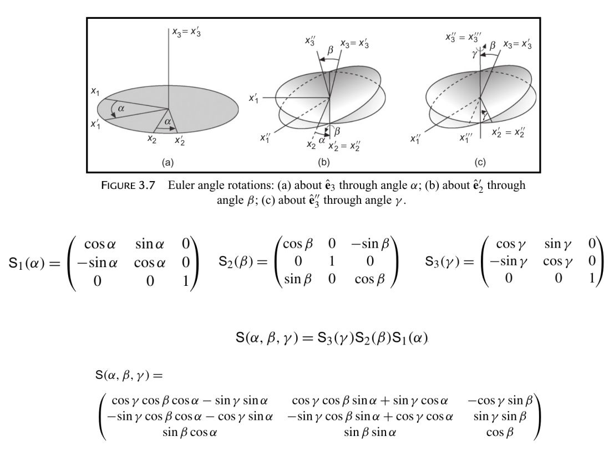
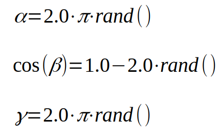

Internal Coordinates¶
Overview¶
Example¶
API¶
-
chiripa.internal_coordinates.bend_angle_purepython(c1, c2, c3, radians=False)[source]¶ Bend angle
Finds angle between three atomic positions. Does not consider periodic boundary conditions.
— (2) — (3) (Bend angle 1-2-3)
- Parameters
c1 – Coordinate of the point 1
c2 – Coordinate of the point 2
c3 – Coordinate of the point 3
radians – returns value in radians if True (False)
- Returns
angle between particles in radians or degrees
-
chiripa.internal_coordinates.cos_angle_purepython(ci, cj, ck, cl, radians=False)[source]¶ - cl c(i+2)| <===> |cj – ci – ck c(i-1) – ci – c(i+1)i is i in the paperj is i-1 in the paperk is i+1 in the paperl is i+2 in the paper
Zhang et al. Journal of Cheminformatics 2012, 4:26 (Figure 4)
Parameters:ci
cj
ck
cl
radians
Returns:
-
chiripa.internal_coordinates.dihedral_angle_purepython(ci, cj, ck, cl, radians=False)[source]¶ Calculate the dihedral angle
Dihedral : ci – cj – ck – clImproper : cl| cj – ci – ckParameters:ci
cj
ck
cl
radians
Returns:
-
chiripa.internal_coordinates.distance_array(ref, conf, openmp=False)[source]¶ Calculate the distances among the points in two arrays using C and Cython
Parameters:ref: (type: ndarray): Reference array containing a number of points with shape [npoints1, dim], where dim is the dimension in 2-D or 3-D points
conf: (type: ndarray): Reference array containing a number of points with shape [npoints2, dim], where dim is the dimension in 2-D or 3-D points
openmp: (type: boolean) Parallel or not
Returns:dist: (type: 2D-ndarray). Distances in Angstroms between the ith atom (row) and the jth atoms
rijx: (type: 2D-ndarray). Component-x of the vector i,j
rijy: (type: 2D-ndarray). Component-y of the vector i,j
rijz: (type: 2D-ndarray). Component-z of the vector i,j
Examples: >>> >>>
-
chiripa.internal_coordinates.distance_array_numpypython(ref, conf)[source]¶ Calculate the distances among the points in two arrays unsing pure pyhton and numpy
Parameters:ref: (type: ndarray): Reference array containing a number of points with shape [npoints1, dim], where dim is the dimension in 2-D or 3-D points
conf: (type: ndarray): Reference array containing a number of points with shape [npoints2, dim], where dim is the dimension in 2-D or 3-D points
openmp: (type: boolean) Parallel or not
Returns:dist: (type: 2D-ndarray). Distances in Angstroms between the ith atom (row) and the jth atoms
rijx: (type: 2D-ndarray). Component-x of the vector i,j
rijy: (type: 2D-ndarray). Component-y of the vector i,j
rijz: (type: 2D-ndarray). Component-z of the vector i,j
Examples: >>> >>> >>> >>>
-
chiripa.internal_coordinates.distance_array_purepython(ref, conf)[source]¶ Calculate the distances among the points in two arrays unsing pure pyhton
Parameters:ref: (type: ndarray): Reference array containing a number of points with shape [npoints1, dim], where dim is the dimension in 2-D or 3-D points
conf: (type: ndarray): Reference array containing a number of points with shape [npoints2, dim], where dim is the dimension in 2-D or 3-D points
openmp: (type: boolean) Parallel or not
Returns:dist: (type: 2D-ndarray). Distances in Angstroms between the ith atom (row) and the jth atoms
Examples: >>> >>> >>> >>>
-
chiripa.internal_coordinates.euler_rotation_matrix(euler)[source]¶ Create a rotation matrix for a given set of Euler angles There are many definitions of the Euler angles (see: https://en.wikipedia.org/wiki/Euler_angles)
The definition here used is that given in:
MATHEMATICAL METHODS FOR PHYSICISTS SEVENTH EDITION George B. Arfken, Hans J. Weber, Frank E. Harris pag: 140-142
Parameters:euler (list) : Euler angles in radians
Returns:None
-
chiripa.internal_coordinates.generate_random_euler_angles(seed=None)[source]¶ Generate Euler angles.
To generate an uniform sampling of the three Euler angles:
There are many definitions of the Euler angles (see: https://en.wikipedia.org/wiki/Euler_angles)
Parameters:iseed (type: int): Seed for the random number generator
Return:A vector containg the three Euler angles in radians